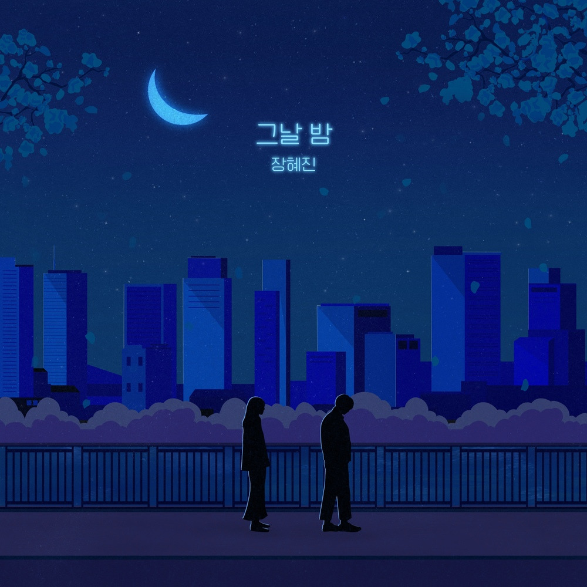

안녕하세요 라보엠입니다.
오늘 소개해드릴 노래는 장혜진님의 2023년 발매된 노래 그날 밤입니다. 1994년 어느 늦은 밤 이라는 노래가 유명하죠. 그 노래와 연관이 있는 느낌이 드는 노래입니다. 장혜진님의 노래는 글로 설명할 필요가 없습니다. 그냥 들어보세요.

장혜진 - 그날 밤
장혜진 - 그날 밤 노래 가사
널 바라본 순간 알았어
오늘은 이별이구나
행복했던 날
힘들었던 날도 모두 기억할게
날 마지막으로 안아줘
잠시 그때로 돌아가
따뜻하게 바라봐 줘
마지막 인사는 웃으면서 하자
날 사랑한다 말해주던 그날 밤
날 보고 싶다 달려왔던 그날 밤
날 좋아한다 고백하던 그날 밤
아직 선명한데
아무 말 없이 안아주던 너에게
날 따뜻하게 위로하던 너에게
내 모든 것을 주고 싶던 너에게
안녕 안녕 마지막 안녕
난 모두 잊을 수 있을까
텅 비어있는 내 마음
무너져 내릴 때마다
날 위로해 주고 일으켜 세우던 너를
날 사랑한다 말해주던 그날 밤
날 보고 싶다 달려왔던 그날 밤
날 좋아한다 고백하던 그날 밤
아직 선명한데
아무 말 없이 안아주던 너에게
날 따뜻하게 위로하던 너에게
내 모든 것을 주고 싶던 너에게
이제 안녕
난 너 없는 하루가 아직 겁이 나는데
그때 네가 그리워
날 좋아하던 네 모습이 그리워
그날의 우리가 보고 싶어
우리가 처음 손을 잡던 그날 밤
날 안아주며 입 맞췄던 그날 밤
하나하나 잊을 수 없는 그날 밤
안녕 안녕 마지막 안녕